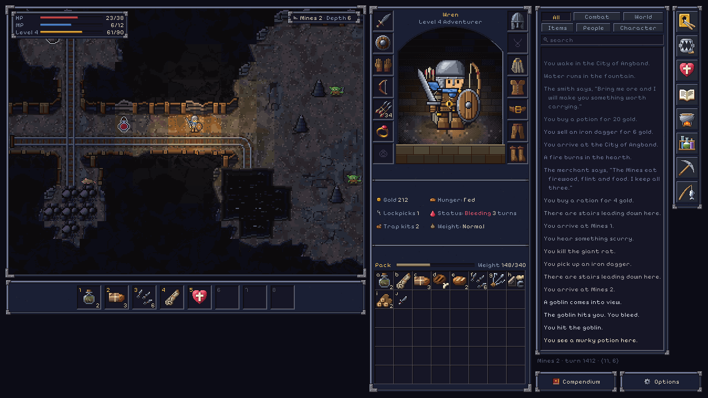

Around the map, round 7
The hero drawn again from a 64 × 64 picture of it, keeping its proportions and pose: the head larger, the sword hand forward at the belt, the other arm hanging, a red scarf and cape. It is drawn the way round 6's body B is, on the same palette, with the same outline, light and shading. Two screens: the short hair, then the long hair falling down and back. Each has its own Gear switch (Furia and a tower shield, the starting kit, the mage) and its own Full screen. Rest the pointer on an item for its short card, click it for the full note. Furia is raging and the background is on throughout. Round 6's body B is in the section below. None of it is in the game yet.
The hero, short hair
The hero, short hair: The author's hero in its own proportions (the head 18 rows of 64, the fist forward at the belt, the near arm hanging, a red scarf and cape), drawn the way body B is drawn; the short hair.
Concept A, round 7: the hero, short hair
Round 6's screen with the hero drawn again from a 64 × 64 picture of it, in its proportions and pose and in body B's manner, with the short hair.
Point or use the arrow keys · click or Enter for an item's full note · F full screen · G gear
The hero, long hair
The hero, long hair: The author's hero in its own proportions (the head 18 rows of 64, the fist forward at the belt, the near arm hanging, a red scarf and cape), drawn the way body B is drawn; the long hair, falling down and back to the neck.
Concept A, round 7: the hero, long hair
The same screen and hero as the one above, with the long hair falling down and back to the neck.
Point or use the arrow keys · click or Enter for an item's full note · F full screen · G gear
Around the map, round 6
The 64 × 64 hero turned three-quarter toward the map, slimmer and with a smaller head, in three proportions to compare on the Body switch (A, three heads, B, four heads, C, five heads). A third loadout, a mage's robe, cloak and quarterstaff; the tower shield from the shoulder to the ground; a tray of 14 keys under the map; a weight for the Weight mark. Furia is raging and the background is on throughout. Rest the pointer on an item for its short card, click it for the full note. None of it is in the game yet.
- A, Three heads: A compact hero three heads tall: the head is 21 px of a 63 px figure, so the helm and the face stay big and readable at the panel's size.
- B, Four heads: A sturdy adult about four heads tall: the head 16 px of a 63 px figure, square shoulders, long legs, a waist under the belt.
- C, Five heads: Tall and lean: a 13 px head on a 63 px figure, long legs and a narrow waist, a grown man's build.
The side column, round 3
036's screen with the author's round-3 feedback: the numbers held tight to their lines with an iron separator between the columns, filter tabs over a taller Pack, a button to save the log, a faint halo round the moon.
Point or use the arrow keys · click or Enter for an item's full note · F full screen · B body · G gear · S figure size
Around the map, round 5
Round 4 with four darker faces for the 64 × 64 hero, to compare on the Face switch (A, the veteran, B, the hollow, C, under the helm, D, the wanderer). Only the head changes; the gear, Furia and the 32 × 32 hero are as in round 4. Rest the pointer on an item for its short card, click it for the full note. None of it is in the game yet.
- A, The veteran: A hard man past his first youth: a low, scarred brow, narrowed eyes and a grizzled jaw.
- B, The hollow: A survivor worn thin: pale cold skin, eyes sunk in shadow with a cold glint, hollow cheeks.
- C, Under the helm: A grim, bearded man whose face is lost in his helm's shadow, two dim glints where the eyes are.
- D, The wanderer: A lean young man, already hard, with long dark hair falling from under his helm to his shoulders.
The side column, round 3
036's screen with the author's round-3 feedback: the numbers held tight to their lines with an iron separator between the columns, filter tabs over a taller Pack, a button to save the log, a faint halo round the moon.
Point or use the arrow keys · click or Enter for an item's full note · F full screen · V face · G gear · T Furia's state · S figure size · B background
Around the map, round 4
Round 3 with the hero drawn anew at 64 × 64: a face with eyes, brows and a mouth, the scarf as one cloth, Furia straight in the hand, the tower shield larger, and the bow worn across the back at both sizes. Rest the pointer on an item for its short card; click it for the full note, as the game's Examine shows it, and close that with its X, a click outside or Escape. The short card now goes away when the pointer leaves the item. Full screen and the keys below work as in round 3. None of it is in the game yet.
The side column, round 3
036's screen with the author's round-3 feedback: the numbers held tight to their lines with an iron separator between the columns, filter tabs over a taller Pack, a button to save the log, a faint halo round the moon.
Point or use the arrow keys · click or Enter for an item's full note · F full screen · G gear · T Furia's state · S figure size · B background
Around the map, round 3
Round 2 with Furia awake: pick the Furia gear and switch her between dormant, ignited and raging, and the sword in the hero's hand and her picture in the Main hand Slot play the same loop. The tower shield on the figure is redrawn from its picture in the Off hand Slot, so the two now match. Rest the pointer on any item, worn, in the Pack or on the number keys, to see its card. New on the screen: filter tabs over the Pack (all, gear, consumables, other), the numbers drawn tighter with a separator, a button that saves the log (it works here too), and a faint glow round the moon. Full screen shows it at the largest whole-number size (×2 on a 2560 × 1440 screen), and the keys below switch it there too. None of it is in the game yet.
The side column, round 3
036's screen with the author's round-3 feedback: the numbers held tight to their lines with an iron separator between the columns, filter tabs over a taller Pack, a button to save the log, a faint halo round the moon.
Point or use the arrow keys · F full screen · G gear · T Furia's state · S figure size · B background
Around the map, round 2
The side column, chosen from the three below, worked into a whole screen: the map with the bars on its corner, a row of eight slots under it for potions and abilities, the hero with what they wear in each Slot, the Pack, the full message log, the skills and crafts at hand, the Compendium and the Options. The hero now shows the gear: each worn thing is a layer laid on one body, so a tower shield or Furia in the hand changes the figure without a drawing for every combination. Switch the figure between a 32 × 32 drawing shown four times over and a 64 × 64 one shown twice, the gear between the starting kit and Furia with a tower shield, and a quiet night scene behind on or off. None of it is in the game yet.

The side column, round 2
035 A's column at 1280 x 720: the figure large in its arch with the gear it wears, the bars on the map's corner, the number keys under the map, the full log, the Skill strip.
Point or use the arrow keys · F: full screen, at the largest whole-number size (×2 on a 2560 × 1440 screen)
Around the map
Three concepts for the dark space around the map while you play: the hero with what they wear in each Slot, the numbers you check every turn, the Pack, and quick slots on the number keys (an idea; the game has none). The map is the same room of the Mines in all three; what changes is what stands around it. None of it is in the game yet. Point at anything on a screen, or use the arrow keys, to see what it is.

The side column
Everything in one slate column right of the view, read top to bottom: the hero in a lit recess with the Worn Slots round it, the numbers, the Pack, the quick slots.
Point or use the arrow keys · F: full screen, at the largest whole-number size
The Title screen
The first screen of the game, before the Roster: a lone hero at a campfire under the night sky, the monsters waiting where the light ends, the title, and the menu. Three concepts, and A2, a second round of the first: the City's castle high on its crag, new trees, a hero who breathes. None of it is in the game yet. Each one is live: click it, walk the menu with the arrow keys, and Enter or a click says what a row opens.

The edge of the light, round 2
A forest clearing at night: the lone hero by a campfire, the City's castle far behind on its crag, and at the edge of the firelight, under the dark trees, goblins, a wolf and the Goblin King waiting.
Arrow keys walk the menu · Enter or a click picks · F: full screen